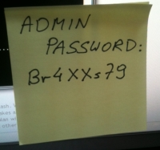

nmap -p 1-65535 10.33.1.62
Starting Nmap 7.40 ( https://nmap.org ) at 2017-02-05 01:24 CET
Nmap scan report for 10.33.1.62
Host is up (0.000043s latency).
Not shown: 65534 closed ports
PORT STATE SERVICE
22/tcp open ssh
Nmap done: 1 IP address (1 host up) scanned in 0.65 secondset si on sécurisait nos PC ?
(et Romain travaillerait sa concentration)
pourquoi ?
parce qu’on peut/doit
parce que l’attaque se fera sur le maillon faible
parce que la majeure partie du piratage vient de l’intérieur

à quel point ?
La sécurisation d’un ordinateur nécessite l’évaluation de la menace et du risque, et l’établissement d’une solution mesurée.
Difficile d’évaluer la menace et le risque
Un employé oublie son ordinateur portable dans le tram…
Son disque était-il chiffré ?
Si non, ses clefs SSH sont disponibles ?
Son script d’accès au VPN (sans double authentification) ?
A quelle plateforme a-t-il accès ?
Ne vient il pas de donner un accès libre à toutes nos plateformes client et à notre SI ?
Alors que le coût…
Ce n’est pas si difficile que ça, une étape à la fois.
comment ?
rendre illisible
chiffrer les données stockées
chiffrer les données transmises
réduire la surface d’attaque
Plus on laisse de portes ouvertes…
n’exposer que le nécéssaire
exhibitionniste
nmap -p 1-65535 10.33.1.38
Starting Nmap 7.40 ( https://nmap.org ) at 2017-02-06 09:53 CET
Nmap scan report for 10.33.1.38
Host is up (0.00077s latency).
Not shown: 65524 closed ports
PORT STATE SERVICE
22/tcp open ssh
53/tcp open domain
111/tcp open rpcbind
139/tcp open netbios-ssn
445/tcp open microsoft-ds
631/tcp open ipp
3000/tcp open ppp
4713/tcp open pulseaudio
6660/tcp open unknown
17500/tcp open db-lsp
35323/tcp open unknown
Nmap done: 1 IP address (1 host up) scanned in 0.66 secondsmot de passe (something you know)
La première chose que l’on rencontre quand on veut se connecter à un PC ou un site web
choix

stockage des mots de passe
On écarte la solution du post-it sur le côté de l’écran. 
Une clef par porte
Un mot de passe qui n’accède qu’à une chose, c’est moins dangereux quand c’est compromis.
sauvegarde
Pour les solutions locales, il FAUT sauvegarder
D’une manière générale, il faut sauvegarder
(et sécuriser les sauvegardes)
stockage
préparation habituelle d’un disque
parted -s /dev/sda mklabel msdos
parted -s /dev/sda mkpart primary 2048s 100M
parted -s /dev/sda mkpart extended 101M 100%
parted -s /dev/sda mkpart logical 0 100M
parted -s /dev/sda mkpart logical 101 2048M
parted -s /dev/sda mkpart logical 2049 4196M
...
mkfs.ext4 /dev/sda1
mkfs.ext4 /dev/sda2
mkfs.ext4 /dev/sda3
mkfs.ext4 /dev/sda4
mount /dev/sda3 /
mount /dev/sda1 /boot
mount /dev/sda2 /tmp
mount /dev/sda4 /var
...one file system to store them all
Un PC n’est pas un serveur.
luks
parted -s /dev/sda mklabel msdos
parted -s /dev/sda mkpart primary 2048s 100%
cryptsetup -s 512 -h sha512 luksFormat /dev/sda1
cryptsetup open /dev/sda1 hdd
mkfs.ext4 /dev/mapper/hdd
mount /dev/mapper/hdd /mntswap
Swapfile.
fallocate -l 8G /swapfile
chmod 600 /swapfile
mkswap /swapfile
swapon /swapfile
echo -e "/swapfile\tnone\tdefaults\t0 0" >> /etc/fstabdd avant luks
Avant de chiffrer un disque pas neuf, il faut l’écraser :
dd if=/dev/zero of=/dev/sda bs=10M
fichier clef
7 slots par luks
peuvent être une passphrase, mais aussi un fichier
fichier clef sur clef usb ? non.
fichier clef sur la partition luks ? oui.
grub
Deux lignes ajoutées :
GRUB_ENABLE_CRYPTODISK=y
GRUB_CMDLINE_LINUX="cryptdevice=/dev/disk/by-uuid/12345678-90ab-cdef-1234-567890abcdef:hdd resume=/dev/mapper/hdd resume_offset=102400"102400 ?
filefrag -v /swapfilepermissions, umask ou les limites du least privilege
umask 077mauvaise idée.
environnement graphique
Un bon PC est un PC locké.
xscreensaver
xautolock
Un bon PC est un PC éteind.
hiberner, eteindre, ne pas suspendre
ne traitez pas votre Linux comme un Windows
Limitez le nombre de paquets installés
Connaissez-les
réseau
IPv6 or not IPv6 ?
not.
ssh
Pas de connexion en root ? Non
Pas de connexion par mot de passe ? Si
Pas de connexion du tout ? Si
AddressFamily inet
PermitRootLogin nopam_ssh
Ou comment avoir une passphrase sans la taper
Configuration dans /etc/pam.d/login :
auth optional pam_ssh.so try_first_pass
session optional pam_ssh.soconfiguration noyau
net.ipv6.conf.all.disable_ipv6=1
net.ipv4.conf.all.forwarding=1
net.ipv4.ip_forward=1
net.ipv4.conf.all.log_martians=1
net.ipv4.tcp_syncookies=1
net.ipv4.tcp_rfc1337=1
net.ipv4.conf.all.rp_filter=1
net.ipv4.tcp_timestamps=0
net.ipv4.icmp_echo_ignore_broadcasts=1
net.ipv4.icmp_ignore_bogus_error_responses=1
net.ipv4.conf.all.send_redirects=0firewall
(extrait)
-I TCP -p tcp -m recent --update --seconds 60 --name TCP-PORTSCAN -j REJECT --reject-with tcp-rst
-I UDP -p udp -m recent --update --seconds 60 --name UDP-PORTSCAN -j REJECT --reject-with port-unreach
-A INPUT -p icmp -j DROP
-A INPUT -p udp -m recent --set --name UDP-PORTSCAN -j REJECT --reject-with icmp-port-unreach
-A INPUT -p tcp -m recent --set --name TCP-PORTSCAN -j REJECT --reject-with tcp-rst(complet)
DNS
autre chose ?
modules
blacklist firewire_coreDésactiver l’USB ?
et le bios ?
Mot de passe
Desactivation du boot sur USB
Mot de passe pour changer l’ordre de boot
et le boot loader ?
Vous avez un TPM, utilisez Trusted Grub.
sans trusted grub
# cat /sys/devices/pnp0/00:09/pcrs
PCR-00: A8 5A 84 B7 38 FC C0 CF 3A 44 7A 5A A7 03 83 0B BE E7 BD D9
PCR-01: 11 40 C1 7D 0D 25 51 9E 28 53 A5 22 B7 1F 12 24 47 91 15 CB
PCR-02: A3 82 9A 64 61 85 2C C1 43 ED 75 83 48 35 90 4F 07 A9 D5 2C
PCR-03: B2 A8 3B 0E BF 2F 83 78 29 9A 5B 2B DF C3 1E A9 55 AD 72 36
PCR-04: 78 93 CF 58 0E E1 A3 8F DA 6F E0 3B C9 53 76 28 12 93 EF 82
PCR-05: 72 A7 A9 6C 96 39 38 52 D5 9B D9 12 39 75 86 44 3E 20 10 2F
PCR-06: 92 20 EB AC 21 CE BA 8A C0 AB 92 0E D0 27 E4 F8 91 C9 03 EE
PCR-07: B2 A8 3B 04 BF 2F 83 74 29 9A 5B 4B DF C3 1E A9 55 AD 72 36
PCR-08: 00 00 00 00 00 00 00 00 00 00 00 00 00 00 00 00 00 00 00 00
PCR-09: 00 00 00 00 00 00 00 00 00 00 00 00 00 00 00 00 00 00 00 00
PCR-10: 00 00 00 00 00 00 00 00 00 00 00 00 00 00 00 00 00 00 00 00
PCR-11: 00 00 00 00 00 00 00 00 00 00 00 00 00 00 00 00 00 00 00 00
PCR-12: 00 00 00 00 00 00 00 00 00 00 00 00 00 00 00 00 00 00 00 00
PCR-13: 00 00 00 00 00 00 00 00 00 00 00 00 00 00 00 00 00 00 00 00
PCR-14: 00 00 00 00 00 00 00 00 00 00 00 00 00 00 00 00 00 00 00 00
PCR-15: 00 00 00 00 00 00 00 00 00 00 00 00 00 00 00 00 00 00 00 00
PCR-16: 00 00 00 00 00 00 00 00 00 00 00 00 00 00 00 00 00 00 00 00
PCR-17: FF FF FF FF FF FF FF FF FF FF FF FF FF FF FF FF FF FF FF FF
PCR-18: FF FF FF FF FF FF FF FF FF FF FF FF FF FF FF FF FF FF FF FF
PCR-19: FF FF FF FF FF FF FF FF FF FF FF FF FF FF FF FF FF FF FF FF
PCR-20: FF FF FF FF FF FF FF FF FF FF FF FF FF FF FF FF FF FF FF FF
PCR-21: FF FF FF FF FF FF FF FF FF FF FF FF FF FF FF FF FF FF FF FF
PCR-22: FF FF FF FF FF FF FF FF FF FF FF FF FF FF FF FF FF FF FF FF
PCR-23: 00 00 00 00 00 00 00 00 00 00 00 00 00 00 00 00 00 00 00 00avec trusted grub
PCR 0-7 Measured by BIOS
PCR 8 First sector of TrustedGRUB2 kernel (diskboot.img)
PCR 9 TrustedGRUB2 kernel (core.img)
PCR 10 Loader measurements - currently linux-kernel, initrd, ntldr, chainloader, multiboot, module
PCR 11 Contains all commandline arguments from scripts (e.g. grub.cfg) and those entered in the shell
PCR 12 LUKS-header
PCR 13 Parts of GRUB2 that are loaded from disk like GRUB2-modules
(PCR = Platform Configuration Registers)
automatisation
Reproductible
Maitrisé
sauvegarde
sur un disque chiffré bien sûr
ou dans un fichier chiffré
rolling (release) on the river
"Je me maintiens au dernier niveau de bug connu." ©2003 Frank D.
antivirus (hahaha)
audit
axes de sécurisation
patches de sécurité
lynis

arch-audit
$ arch-audit
Package bzip2 is affected by ["CVE-2016-3189"]. Medium risk!
Package curl is affected by ["CVE-2016-9594", "CVE-2016-9586"]. Update to 7.52.1-1!
Package gst-plugins-bad is affected by ["CVE-2016-9447", "CVE-2016-9446", "CVE-2016-9445"]. High risk!
Package jasper is affected by ["CVE-2016-8886"]. Medium risk!
Package libimobiledevice is affected by ["CVE-2016-5104"]. Low risk!
Package libtiff is affected by ["CVE-2015-7554"]. Critical risk!
Package libusbmuxd is affected by ["CVE-2016-5104"]. Low risk!
Package openjpeg2 is affected by ["CVE-2016-9118", "CVE-2016-9117", "CVE-2016-9116", "CVE-2016-9115", "CVE-2016-9114", "CVE-2016-9113"]. High risk!
Package openssl is affected by ["CVE-2016-7055"]. Low risk!et donc ?
Pas de solution sans prise de conscience